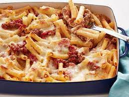

Ziti is a hollow, tube-shaped pasta, and it's also the name of a baked, cheesy dish you can make with ziti. In Italian, ziti is short for maccheroni di zita, or "macaroni of the bride." This probably comes from ziti's longstanding popularity as part of a wedding buffet, particularly in Southern Italy.